Morrisite.org › Places › Kington Fort
Kington Fort
South Weber, Utah. The fort at South Weber where Morris gathered his followers in 1861–62, and the siege of June 1862.

Built in 1853 and abandoned in 1858, then reoccupied by the Morrisites. Nothing of the fort survives; a monument to the Kington Fort–Morrisite War site, Sons of Utah Pioneers marker no. 128, was erected in August 2006 at 6600 South and 475 East (N 41.14677, W 111.96884), sponsored by the South Weber chapter of the Daughters of Utah Pioneers, the Ogden Pioneer chapter of the Sons of Utah Pioneers and All Build Construction and Landscaping, with the site designed by Douglas B. Stephens (Barlow, 2022). The fort was named for Bishop Thomas Kington, and “Kington” is the correct spelling. The monument itself notes that the earliest sources (the notebook kept by Kington’s wife, his gravestone, Wilford Woodruff’s journals, and early church records) all spell it that way; recent scholarship such as Holley (2008) follows them. Many nineteenth- and twentieth-century accounts, and some modern references, including the Utah History Encyclopedia and Wikipedia, write “Kingston Fort.” Insiders used both: Forscutt, who lived in the fort, wrote “Kingston’s Fort” and called it “the proper name” of the place (“Sketch of Joseph Morris,” CHL MS 702). Search under both spellings. Not all the people in the fort were from South Weber. Holley (2008) names eleven men from Slaterville and Marriott, about nine miles to the northwest, among the prisoners of June 1862, and two of the family groups on the roll, Cowan–Bull and Higham, were Slaterville families (see “Families on the roll” on the roll page). A log cabin nearby, which the local historian Ed Cooper, from oral accounts of older South Weber residents, identified as the building Morris used to hold the three departing members whose detention led to the siege, is shown in MO-IMG-046–049; it has been moved from its original site, and the identification rests on local tradition. About 200 yards south, on the west side of the road, in the South Weber Pioneer Cemetery, a marker reads “Joseph Werner, ‘Morrisite,’ about 1870” (MO-IMG-021). The date cannot be his death: a Joseph Warner, sixty-two, born in Germany, a widowed laborer, was living at South Weber in 1880 (1880 U.S. census, South Weber, Davis County, ED 16), and he died at South Weber in 1893, probably in September (Davis County Court minutes, October 2 and October 30, 1893, pp. 462, 470 (County court minutes, 1852–1893, FamilySearch film 484601, item 2, DGS 7579269)). The marker was probably set long after the burial, perhaps when an Army Reserve unit restored the cemetery in 1973–75, and its date is an estimate. He was almost certainly the “Brother Warner” who in 1875 prophesied a gathering to Weber (see Who was “Brother Warner”?). The name lingered locally. In the early 2000s, while the editor was going door to door in South Weber, a woman then in her sixties said that elementary-school classmates had called her “Morrisite” as a taunt because of where in South Weber she lived; she said her family had no Morrisite connection. (Editor’s memorandum of recollection, written November 1, 2026; the conversation was not recorded at the time.) A cannonball from the siege was kept by the family of Al Peek, together with a portrait of Mary Christoffersen Anderson (MO-IMG-051–053; the portrait is MO-IMG-062).
VisitThe monument is public. The Pioneer Cemetery appears to lie on private land but is reached by a public easement; stay on the access route. The cabin is on private property.
Places on the ground
The fort and the siege of June 13–15, 1862, as the sources place them. Nothing of the fort survives, and the ground is now streets, houses and fields. Solid markers are located; outlined markers are approximate (placed from a plan or a written description); the dashed square is the fort as G. Q. Jones drew it. Most of this is private land: the monument is the public place to visit. If you know where one of these places stood, please write.
Streets are drawn straight through the monument corner and are approximate. The fort’s outline follows the plan by G. Q. Jones (1996) and the editor’s 2009 overlay of it on an aerial photograph; it is good to perhaps a hundred feet.
- The Kington Fort–Morrisite War Site monument Located 2006 map
Sons of Utah Pioneers marker no. 128, at 6600 South and 475 East, erected in August 2006 by the South Weber chapter of the Daughters of Utah Pioneers, the Ogden Pioneer chapter of the Sons of Utah Pioneers and All Build Construction and Landscaping. It stands within the area of the old fort. Public.
Sources: Barlow (2022); see History. - Kington Fort Approximate 1853–1862
Built in 1853 by the settlers under Bishop Thomas Kington and abandoned in 1858; a square of about 645 feet with log and later adobe houses along an earth wall, gates on each side and a public square in the middle. The Morrisites reoccupied it in 1861, rebuilt the wall in adobe and built new houses. Jones’s plan places Morris’s tent and an adobe schoolhouse in the southwest part of the fort, and the intersection of today’s 6600 South and 475 East inside it.
Sources: G. Q. Jones, “Morrisite Fort – Plan, South Weber, Davis County, Utah,” December 1996 (not reproduced here); the monument text. - The bowery, west of the fort Approximate June 13, 1862 map
The open-air meeting place in a grove of trees west of the fort. On the morning of June 13, as Morris spoke to his people there, the posse’s cannon fire fell among them, killing two women and wounding Mary Christoffersen. The marker follows Jones’s plan.
Sources: Jones plan (1996); see History. - The west gate and the surrender Approximate June 15, 1862 map
Jones places near the west gate the scene on June 15, after the white flag was raised, in which Joseph Morris and two women were killed and John Banks was fatally wounded. Accounts of how it happened differ; see History and Questions.
Sources: Jones plan (1996). - The south gate and the slough Approximate June 15, 1862 map
Jones’s plan marks a slough just outside the south gate, where a road crossed it, and notes that on June 15 an armored battery made from the rear of a wagon was rolled toward the fort, caught a wheel in the mud and tipped over, and that its crew retreated under musket fire. Jones gives no source for this. Anderson describes a rolling battery of willows and wagon wheels pushed up to the fort wall the same day. A posse member, John G. Chambers, says it was built “of willows placed lengthwise through three hind wheels of a wagon” and brought forward after the posse took a cabin near the entrance, and that fear of it hastened the white flag. The accounts differ. See MO-IMG-032 under Images.
Sources: Jones plan (1996); Anderson, Revisited, p. 135; John G. Chambers, “Siege of Morris fort, 1862 June,” Historian’s Office collected historical documents, CR 100 397, Church History Library. - The posse on the south bluffs Approximate June 13–15, 1862 map
The fort stood in a bowl on the Weber River flood plain, ringed on the south and west by sandy bluffs about half a mile off and some two hundred feet high. Burton’s posse took its position on the south bluffs on June 13 with its cannon, from which it could see into the fort. The marker stands for the bluff line, not a known gun position.
Sources: Anderson, Revisited, pp. 64, 112, 128. - The Ogden volunteers on the north bluff Not yet located June 1862
Volunteers from Ogden brought a cannon to the bluff north of the river. Its position has not been placed.
Sources: Anderson, Revisited, p. 128. - South Weber Pioneer Cemetery Approximate 1870 map
About 200 yards south of the monument, on the west side of the road. A marker reads “Joseph Werner, ‘Morrisite,’ about 1870” (MO-IMG-021). The cemetery appears to lie on private land but is reached by a public easement; stay on the access route.
Sources: The editor’s visits, before 2004. - The “Morrisite jail” cabin Not yet located 1862
The log cabin that the South Weber historian Ed Cooper identified, from local tradition, as the building Morris used to hold the three departing members in 1862 (MO-IMG-046–049). It has been moved from its original site, which is not known, and it stands on private property; its present location is not given here.
Sources: Ed Cooper, to the editor, before 2004.
In the chronology
- 11 Feb 1861The apostles John Taylor and Wilford Woodruff hold a meeting at South Weber to “regulate” the branch. On Taylor’s motion, seconded by Woodruff, sixteen of Morris’s followers are cut off from the church, among them Bishop Richard Cook, his brother John Cook, John Parson and Robert Farley (Woodruff’s journal, February 11, 1861). Morris’s name is not on the list Woodruff recorded. A Morrisite account printed thirty years later says the test put to the branch was to testify that Brigham Young was a “Prophet, Seer and Revelator,” and that “seventeen men and women” declined, willing to own him as president of the church but not as a prophet. It has Lot Smith and about twenty armed men come with the apostles, an “old man of the name of Watts” propose that the dissenters’ throats be cut, and Bishop Cook ask whether he was “under the flag of the United States” or “among savages,” after which Taylor proposed excommunication (“The Morrisite Tragedy,” letter 8 of “The Elder,” Salt Lake Tribune, July 19, 1891, p. 3; see Newspapers).
- 6 Apr 1861Morris organizes his church at South Weber with six members and calls his followers to gather at Kington Fort, an abandoned 1853 settler fort there (Anderson, Revisited, p. 66). Two days earlier a revelation named Richard Cook and John Parson as the first men called, Parson to preside over those who would hold the apostleship, because it was necessary to call these two “in order to commence an organization” (The Spirit Prevails, No. 56, pp. 78–79). Josiah D. Price’s journal names the six whom Morris baptized on April 6: Richard Cook, John Cook, Nathan Brooks, John Firth, William Kendell and Moses Bryne (written “Burnes”), all of them high priests except Bryne (Josiah D. Price journal, 1858–1873, photocopy, P26-22 f1, Community of Christ Library Archives). On its name, see the Glossary.
- May–Jun 1861An informer’s report sent to Brigham Young describes Morris’s Sunday meetings. On May 12 six people are confirmed by three men laying on hands together, Morris, Richard Cook and John Parson, and Cook gives “an explanation of the diagram.” Morris says: “I say now I profess to be the Seventh Angel. The seventh thousand years is now ushered in. Joseph held the 6th seal of the 6th dispensation.” Parson reads a revelation of May 11 commanding “those who believed in him (Morris) to gather forthwith to South Weber.” On May 26 Morris says that “one month would not elapse before the judgments of God would be poured out” (“Doctrines of the Morrisites, May 12, 1861,” informer’s report, “Morrisite papers, 1861–1862,” Brigham Young office files, CR 1234 1, Church History Library).
- 1 May 1862Six captains are chosen at Kington Fort, each to drill ten men. That day, by Josiah D. Price’s account, Morris, Richard Cook, John Banks and John Parson rode before the company as the four horsemen of Revelation 6, on white, red, black and pale horses, with a sword, a pair of balances and the book of revelations, which were explained to the people as judgment, justice and mercy (Josiah D. Price journal, 1858–1873, photocopy, P26-22 f1, Community of Christ Library Archives).
- 11 Jun 1862Acting Governor Frank Fuller orders General Daniel H. Wells to furnish the territorial marshal, Henry W. Lawrence, and his deputies, Robert T. Burton and Theodore McKean, “a sufficient military force” to act as a posse in serving Third District Court writs for the arrest of “Joseph Morris and others residing in the northern part of Davis County.” The order survives in a copy Wells made in 1871 (Utah Territorial Militia Records, series 2210, document 1,215, Utah State Archives; page image on FamilySearch).
- 13 Jun 1862A territorial posse under Robert T. Burton arrives at Kington Fort about 10 a.m.; one of its members, John G. Chambers, puts it at “about 500 men,” with artillery. Howard Egan carries a white flag; when no notice is taken, the cannon open fire. “The first ball killed two women & wounded a third” in the bowery, where Morris was reading a revelation (Chambers; Forscutt also saw two women dead). Jared Smith of the posse is killed. Two men, one of them “Eardley,” leave the fort with their families under a white handkerchief (John G. Chambers, “Siege of Morris fort, 1862 June,” Historian’s Office collected historical documents, CR 100 397, Church History Library). The Morrisite letters of 1891 add that the notice was carried in by a boy herding the camp’s cows, giving the five men named in the writs thirty minutes to give themselves up, and that the cannon ball struck the meeting while the notice was being read, killing an old woman and a younger one with a baby in her lap, who was unhurt, and wounding a girl in the jaw. They tell of Egan’s men coming in through the fields on the east, and give Egan’s own account, as he told it to Morrisites at Deep Creek in 1863: that he led the Salt Lake City men, fired on the tents from the east until the Morrisites drove them back, and then withdrew and did not return (“The Morrisite Movement” and “The Morrisite Tragedy,” letters 7 and 8 of “The Elder,” Salt Lake Tribune, July 12 and 19, 1891, p. 3).
- 14 Jun 1862Rain falls all day. That evening the posse fires the Ogden cannon and “the ‘Old Sow,’” a large gun sent up from Salt Lake City (Chambers). The same day the acting governor, Frank Fuller, writes to Burton that “the shedding of blood in resistance to civil authority renders execution of the law imperative”: “Let your acts still be tempered with mercy, but see that the Laws are vindicated” (copy, Brigham Young office files, CR 1234 1, Church History Library).
- 15 Jun 1862A Sunday. About eighteen men of the posse take a log cabin near the entrance of the fort, and Peter Wahler is killed. A rolling battery of willows on wagon wheels is then brought forward; by Chambers’s account the Morrisites took it for a mine and panicked, while other accounts have it tipping over in the mud or pushed up to the wall (see Kington Fort). That morning Morris delivers a revelation promising deliverance “which ever way it comes”: either the posse will be turned aside, or angels will hold the men so that “all the guns would soon be still”; Christ must “unveil” himself “in the course of a few hours” (The Spirit Prevails, No. 304; a manuscript copy is in the Community of Christ Library Archives, P11-1 f5). A white flag goes up, and the people are called together to the tune “In a cottage near a wood.” Morris is killed at the surrender; George Thompson, one of the fort’s people, wrote in 1869 of the moment “when Joseph fell by the School house” (George Thompson to William P. Thomas, July 1869, Church History Library, MS 31876, Letters from George Thompson to William P. Thomas, 1869–1874). Most accounts say John Banks, wounded, died in custody that evening; Chambers writes that Burton “with his aides killed Morris & Banks, and two women” (see Who died at Kington Fort?). The siege ends that evening, and the men are listed as prisoners “Sunday, June 15, 1862 – 7 p.m.” (John G. Chambers, “Siege of Morris fort, 1862 June,” Historian’s Office collected historical documents, CR 100 397, Church History Library; “Morrisite prisoners, 1862 June,” Historian’s Office collected historical documents, CR 100 397, Church History Library).
- 18–19 Jun 1862Before Judge Kinney in Salt Lake City, Richard Cook is fined and jailed for contempt, Peter Klemgaard and Christian Neilson are held in prison, and ninety-five other men are bound over on $1,500 bail each for the March 1863 term (Deseret News, June 25, 1862).
- Mar 1863In Salt Lake City, seven Morrisites are convicted of second-degree murder: Peter Klemgard is sentenced to fifteen years, Christian Neilsen to twelve, and Abraham Taylor, Kadrup Neilsen, Jens Christiansen, Andrew Lee and Andrew M. Mason to ten; John Parson and John E. Jones are acquitted. The other prisoners are fined $100 each for resisting arrest (Deseret News, April 1, 1863). The new territorial governor, Stephen S. Harding, pardons them all a few days later. During the trials, on March 8 and 24, believers in Great Salt Lake City received a prophecy in tongues, “given by L. B.” and interpreted by “Br. B.”: they would be “gathered together again,” a “reorganisation of the faithful” would soon take place, those in prison would be “delivered as Daniel,” and “the Records hidden in the earth” would soon be in their hands (Community of Christ Library Archives, P11-1 f5). It is the earliest dated Morrisite text yet found from after the siege.
- May 1863Many Morrisites leave Utah under the protection of Patrick Edward Connor, commanding the District of Utah. On May 5 a party of 160 (53 families, seven single men, and four widows) sets out with a company of California Volunteers; it reaches Soda Springs on May 20, where Connor has a town site surveyed on the north bank of the Bear River beside a new military post, Camp Connor (established by order of May 23). The Morrisites call their town Morristown. Connor also gives 150 Morrisites passage to Carson City, Nevada, in an empty supply train. Others settle in California. (Connor’s report, June 2, 1863, Official Records, ser. 1, vol. 50, pt. 1, 226–29.) A writer who camped beside that train at Deep Creek, the Overland Mail station kept by Howard Egan, remembered six-mule army wagons carrying two Morrisite families each, bound for Fort Churchill under a lieutenant, with Richard Cook among them; Egan, who had been with the posse in 1862, gave them a supper and a dance (“The Morrisite Movement,” letter 7 of “The Elder,” Salt Lake Tribune, July 12, 1891, p. 3).
- 1860s–Some Morrisites return to the Church of Jesus Christ of Latter-day Saints, in Utah and elsewhere. The 2006 monument at South Weber notes that a few were rebaptized and remained there. Others find a home in the Reorganized Church (RLDS): the former Morrisite apostle Mark Hill Forscutt joins it in Salt Lake City in 1865, and John L. Bear (Johann Lebrecht Bär, 1838–1919), a Swiss convert from Affoltern am Albis who emigrated from Zürich in 1860 and lost his wife and child at Kington Fort, later serves as an RLDS missionary to Switzerland and Germany, dies in Independence, Missouri, and publishes his autobiography in the RLDS Journal of History. In 1865 RLDS missionaries at Malad, Idaho, baptize several people who appear on the roll. Others join only after years in the Morrisite groups: Erick and Caroline Eliason are baptized together at Soda Springs on June 9, 1870; Margaretta Cook leaves the Morrisites in Nevada in 1870 and is baptized RLDS in 1873; and Lena Hanson, at Soda Springs and then Deer Lodge, in 1895; in 1890 John R. Eardley reported that Brother Emmons of the Montana church had been baptized and that Mrs. Emmons meant to follow (see the roll).
- Nov 1865Writing from Salt Lake City to William James and John R. Eardley, Williams breaks into verse on the siege, his own poem in his own hand. It begins, on the pattern of Byron’s “The Destruction of Sennacherib” (“The Assyrian came down like the wolf on the fold”): “The Mormons came down like a wolf on the fold / On a morning in June that was glittering like gold.” Its lines tell of the cannon, of “the shrieks of the children and cries of the maid / Whose chin was torn off by the fierce cannonade” (Mary Christoffersen, later Mary Anderson, who testified in 1879 that a cannon ball took off her chin), and of a babe “torn from the breast by a bombshell’s embrace”; it ends with a prayer that “Seth,” Morris, “may be loosed.” Williams left it unfinished: “Here I end not that the Muse tires but that you may share the honor of placing in verse the terrible scene of immortal Weber; finish the tragedy yourselves.” It is a partisan poem written three years after the events, the earliest Morrisite telling of the siege so far found in verse (Williams to James and Eardley, G.S.L., November 1865, Church History Library, MS 31876, Letters from Cainan to William James and John R. Eardley, 1864–1867; readings from the manuscript, some words uncertain).
- 1868Early in the year Williams, in Salt Lake City, thanks the Montana Saints for money sent “by Bro P. Thomas.” S. P. Guhl’s promise to send for him has come to nothing (“he tells me his horses were stolen”), his “family are very sick,” and someone is taking up a land claim for him near the Saints; George Thompson is already in England. Williams explains that by ministers he had sent “to Montana & Idaho” who “had cursed the saints instead of blessing them” he meant “the rebels Dow, Davies, Gudmanson and not … Bro Ghul,” that is, probably Alexander Dow, William W. Davies and Gudmund Gudmundson, the apostle of 1861: George Thompson wrote in 1869 of “Poor Brother Dow,” “Poor Livingstone,” “Poor Goodman Goodmunsen, poor W. W. Davis and others of the Weber House, good men,” who had been “deceived by supernatural manifestations” (George Thompson to William P. Thomas, Church History Library, MS 31876, Letters from George Thompson to William P. Thomas, 1869–1874). He signs “Cainan for the Lord’s sake, George Williams.” On December 14 he writes to “Bro. James & Saints of the Most High in Montana”: William James’s group is already in Montana and uses the name later borne by the Montana church. Williams wishes to visit “my beloved brethren & sisters in Montana” but has been “kept from coming,” for “the rebel who have entered my flock in Montana has laid a snare for Cainan’s life,” one he calls “the seventh born son,” who has “seduced others” but whom he does not name; “Joseph the first & Joseph the Second fell a sacrifice to plots.” Instead he is “called to travel to the States & Europe” (Church History Library, MS 31876, Letters from Cainan to William James and Montana followers, 1868).
- 1869George Williams leaves Utah for England, passing through Omaha from January 18 to February 5, where the Council Bluffs and Omaha congregations are organized on his authority (see Omaha & Council Bluffs under Places); a year later he writes from Loughborough that it was “now one year since I left the continent of America”; his wife and children stay in Salt Lake City, and he asks the Montana members to send help for “my little ones” (Williams to the Saints of the Most High in Montana, January 10 [?], 1870, Church History Library, MS 31876). By June he is at Ashwicken, near King’s Lynn, Norfolk, writing to the Saints at Omaha and Council Bluffs, where Rasmus Rasmussen is “the presiding Bishop.” George Thompson is with him at Ashwicken that summer, and William P. Thomas and a Brother James come to England too: Thompson writes on July 29, 1869, to “Beloved Brethren W. P. and D. J.,” one at Llanybyther in Wales and the other at Derby. That summer Thompson, then a shoemaker at Ashwicken, lost touch with Williams from his letter of July 30 until September 10, when Williams wrote that he had “worked & preached and lectured in the field, harvest field, at night, on Sundays … with thieves for my companions”; S. P. Guhl had left Lynn for Hull and Denmark in July, meaning to publish a paper there (George Thompson to William P. Thomas, Church History Library, MS 31876, Letters from George Thompson to William P. Thomas, 1869–1874, July 29 and September 13, 1869). In September and October Williams writes from near Betchworth Castle, Surrey, “often in different parts of the Country”; on October 13 he writes that Thompson, “like a rock unto me,” will leave for Wales on October 20 to help Thomas, “then I am alone in England as far as the old Weber House is concerned,” and asks that letters be sent to him in care of W. P. Thomas at Llanybyther, Carmarthenshire. His letter of December 24 is headed, apparently, from Llanybyther; “in England the Priesthood are united in love and in effort,” though the seed “certainly is falling on stony ground” (Williams to the Omaha church, September 16, October 13 and December 24, 1869, Church History Library, MS 31876, Letters from Cainan to Andrew Henrikson, 1869). The Omaha minutebook names him: on June 2, 1869, Guhl left for Denmark with “2 Welsh brethren, William P. Thomas, a High Priest, and an Aaronic Priest Daniel James,” called “to go to Wales on mission.” In March 1870 Williams writes that “Bro Thomas & Bro James,” having “attended the heavenly call,” are “now permitted to return to their families in Montana” by way of Omaha. In May he reports the English followers “preaching on the building of the temple in this nation in our meetings on Sundays,” with the sacrament “not refused to any we know that are our real friends”; in December he writes that “the Lord is raising up a set of men to pull down Brigham’s cruel rule; I wish them success but beware of their infidel reasoning,” apparently of the Godbeites (Williams to Hendrikson and Rasmussen, May 1870, and to Hendrikson, December 28, 1870, Church History Library, MS 31876, Letters from Cainan to Andrew Henrikson, 1870). In April 1871 he thanked Hendrikson for sending the Salt Lake Tribune, the Godbeites’ new paper: it “contains some sound principles, but you will know how to sort the errors; it is also a powerful engine against the Tyrant of Salt Lake” (Williams to Hendrikson, April 1871, Church History Library, MS 31876, Letters from Cainan to Andrew Henrikson, 1871). In September 1870 he gives his own account of Almerin Grow, who had walked from California to Salt Lake on hearing of him, was told of “his mission to the Sultan & Priesthood of Mahommet,” and was later “sent to Constantinople & Jerusalem,” returning “without my consent”; Grow himself wrote from San Francisco in August 1870 that he had come overland, met “the assembly at Omaha,” and “did more in Turkey than any other living man could have done,” having “made up my mind to die in the streets of Constantinople rather than fail in my mission,” and that James Dove “has been with Davis but has left him” (Almerin Grow to Williams, August 29, 1870, enclosed with Williams to Hendrikson, September 21, 1870, Church History Library, MS 31876, Letters from Cainan to Andrew Henrikson, 1870); by 1878, John R. Eardley reported from California, Grow was preaching against Williams and “up George Dove” at San Juan (John R. Eardley to Williams, Hollister, California, [May] 1878, Church History Library, MS 31876, Letters from Cainan to John R. Eardley, 1871–1880) (Williams to the Omaha church and to Andrew Hendrikson, 1869–70; George Thompson to William P. Thomas, 1869; and the Omaha minutebook, 1869–1871, MS 31876). Danish-language congregations keep membership and account books in Omaha, Nebraska, and Council Bluffs, Iowa. Their registers show Andrew Hendrikson, born at Ondrup, Jutland, on July 29, 1843, baptized “in the Missouri River” at Omaha on January 22, 1869, by Rasmus Rasmussen and Hans Knudsen (“Record of members, circa 1869–1871,” Council Bluffs, Church of the Firstborn (Morrisites) records, 1869–1890, MS 32226, Church History Library; translation from the Danish generated by Claude).
- 1874–75In England, John R. Eardley has come to Williams “with his beloved wife & family and quickly engaged in business” (Williams to Margaret Thomas, July 27, 1874). Williams still means to come to Montana: in April 1874 he asks about crops, prices, the chance of “a Railway coming thro either from the States or from Ogden,” and “when I come where do you intend to put me for a while” (epistle of April 6, 1874, Church History Library, MS 31876, Letters from Cainan to Montana followers, 1874–1875). About January 24, 1875, Williams leaves Ashby for George Thompson’s house at 1 Aglan Place, Shernhall Street, Walthamstow. Thompson, writing to William P. Thomas on January 31, asks: “Have you heard of Brother Warner? He claim[s] to have seen Bro Joseph & to be sent to warn the brethren to gather to Weber, that the Shepherds of Utah will be cut off in 1875 & the Saints be gathered to Weber in 1876. I fear this is too sweet to be true”; and, “I am looking for him & at Weber.” On May 10, 1875, Williams answers such prophecy: “if one cometh saying to Seth cometh to Weber in such a time or times or half a time, the chart & compass of a righteous judgment is gone.” In the same letter he warns against a man who “can keep putting off the coming of Jesus until years has passed away,” and writes that “John Parsons, Livingstone, Davy, Dove [or Dow] and others, after admitting the legal Priesthood of Cainan, fell and attempted a business of their own; these failed and did not do very much injury” (“Davy” is probably Davies, whom Williams elsewhere calls “Doctor Davy”) (Church History Library, MS 31876, Letters from Cainan to Margaret and William P. Thomas, 1866–1882). In November 1875 John R. Eardley reported from Hollister, California, that “Bro. Warner—the German brother” had been through that country warning the Weber Saints “to prepare for the coming of Bro. Joseph next June” (John R. Eardley to William James, Hollister, California, November 9, 1875, Church History Library, MS 31876, Letters to William James, 1874–1875). Brother Warner was almost certainly Joseph Warner of South Weber, a German-born Morrisite who testified in 1879 that a vision of Joseph Smith had got him cut off from the Latter-day Saint church (see Who was “Brother Warner”?).
- 1877Williams settles the dispute of 1876: the word “convenient” meant that each member “may choose the Stake convenient to their feelings & opportunities of attending,” under “two distinct Presidencies, not interfering one with the other.” In the same letter of January 11 he asks that February 14, his birthday, be kept as “a day of rejoicing,” and that Sister Rasmussen be ordained “High Priestess” for Stake No. 2. In April he sends William James instructions for a white linen robe and creates “the Court of the Lord’s House,” to meet every May 10; in August he adds a court every November 10. In October he asks for a building “to carry out Temple ordinances,” and moves that the court commit William Davies, S. P. Guhl, James and George Dove and one other “to outer darkness for one thousand years,” to be sanctioned “with both hands uplifted, saying Amen.” In August Williams writes of the “serious charge” that William P. Thomas had faced the winter before (see 1876), and asks that musical talent be encouraged “within limits”: a brother “wasting his talent for Music with the earthly throng” should instead “get up little schools and learn the young.” That summer Rasmus Rasmussen wrote to him of “the Indians in anger coming down upon our friends in Deer Lodge,” during the Nez Perce War; in October Williams wrote that he had been “daily expecting to hear … in hope to allay our uncertainty regarding the mischief expected from Indians,” and that “Bro George & Bro Britt [?] of Weber are with me.” (Williams to Hendrikson, January 11 and August 8, 1877; to James, April 2, 1877; to James, Hendrikson and the Montana Saints, October 12, 1877; Church History Library, MS 31876, Letters from Cainan to Montana followers, 1876–1877, and Letters from Cainan to William James and Montana followers, 1876–1878).
- 1892In San Francisco, James Dove publishes A Few Items in the History of the Morrisites for the California congregation, and A Treatise on Re-Incarnation or Re-Embodiment, which Kirk Watson calls the earliest book on the subject in the wider Mormon tradition (Watson, pp. 199, 208–64). A printed copy of A Few Items survives among Hendrickson’s letters at the Church History Library. On June 13, the thirtieth anniversary of the posse’s arrival at Weber, the former apostle John Parson dies of pneumonia at the Larsens’ ranch near Deer Lodge; Eardley calls the death “a great shock” that “undermines many of my calculations, and some of the predictions of Weber!” (Eardley to James Dove, June 18, and to Hendrickson, July 3, 1892, Church History Library, MS 31876, Letters to Andrew Hendrickson, 1892).
- 2006A monument to the Kington Fort–Morrisite War site is dedicated at South Weber.
Photographs (33)
MO-IMG-001 Kington Fort–Morrisite War Site monument, Sons of Utah Pioneers marker no.…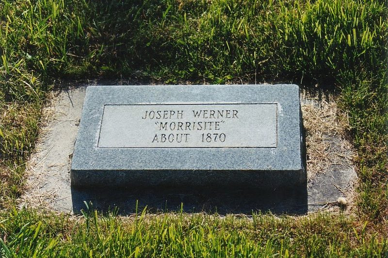
MO-IMG-021 Grave marker of Joseph Werner, inscribed “‘Morrisite’ about 1870,” in the…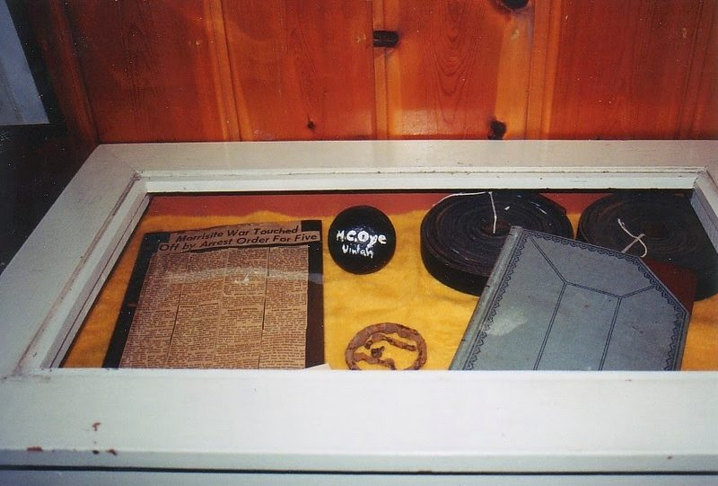
MO-IMG-022 Museum display on the Morrisite War: a newspaper clipping headlined “Morrisite…”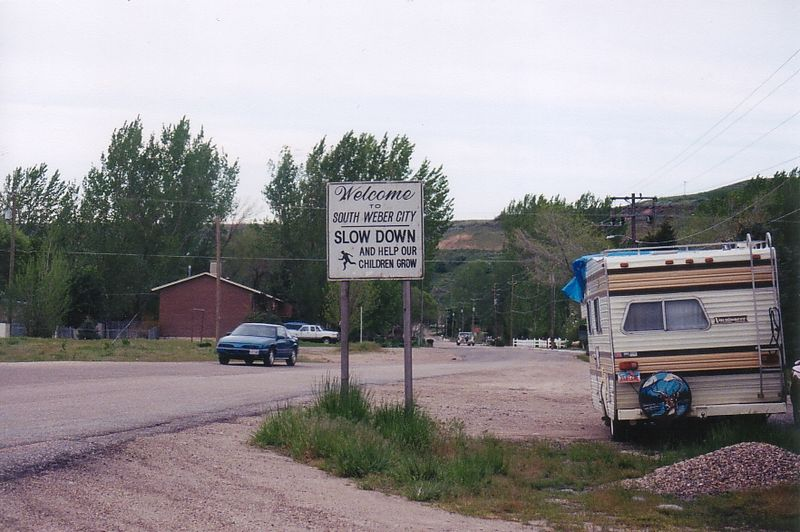
MO-IMG-028 The South Weber welcome sign at the edge of town. South Weber, Utah · before…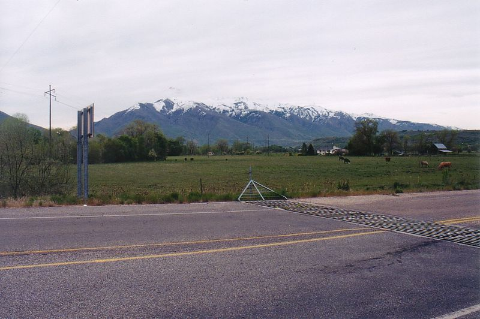
MO-IMG-029 The road through South Weber, with the Wasatch Range behind. South Weber, Utah…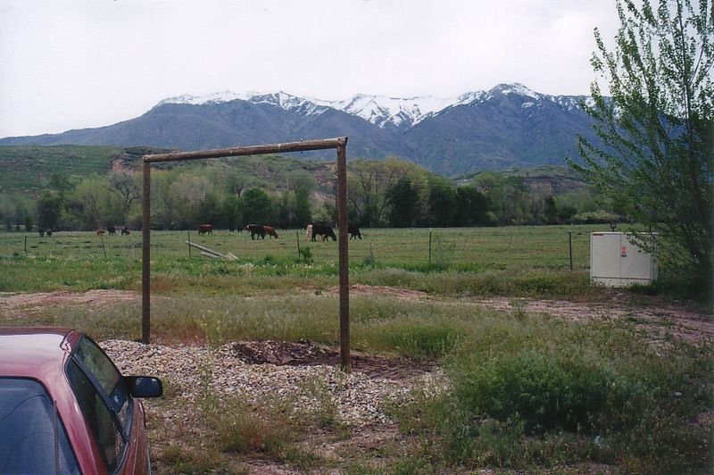
MO-IMG-030 Pasture with a wooden gate frame at a South Weber crossroads. South Weber…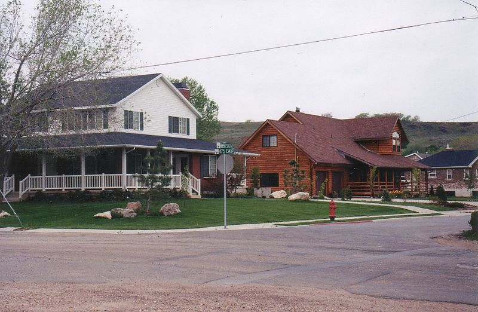
MO-IMG-031 Homes at a South Weber crossroads. South Weber, Utah · before February 2004…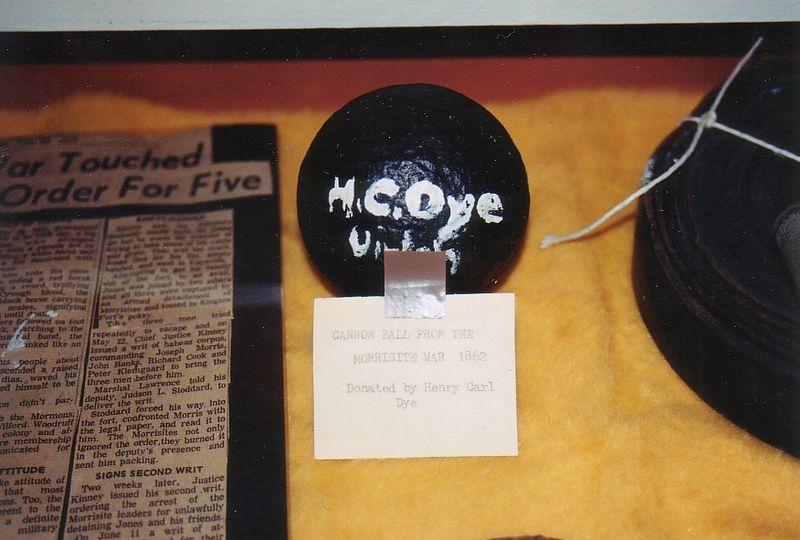
MO-IMG-054 The Uintah museum cannonball, painted “H.C. Dye, Uintah,” with a card reading…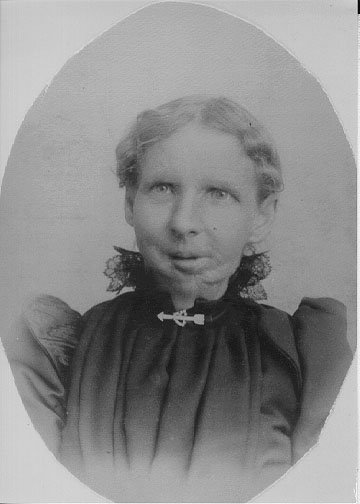
MO-IMG-062 Mary Christoffersen Anderson (1847–1928), whose jaw was shot away by a…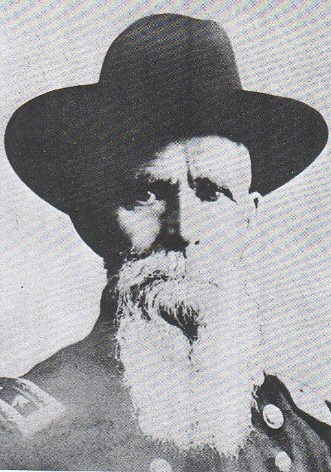
MO-IMG-059 Robert T. Burton, who led the posse at Kington Fort in 1862. Indicted for…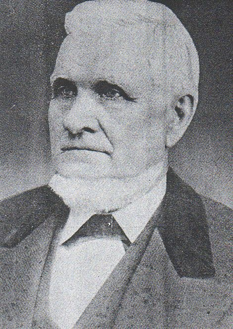
MO-IMG-057 John Taylor, LDS apostle, who on February 11, 1861, moved that sixteen of…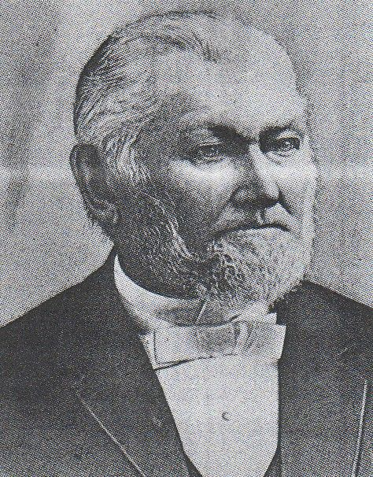
MO-IMG-058 Wilford Woodruff, LDS apostle, who seconded Taylor’s motion of February 11…Records, documents and questions
- Documents The Spirit Prevails (1886)
- Documents Roll of Membership (1886)
- Documents Gems of Inspiration (1899)
- Documents “Sketch of Joseph Morris,” undated
- Documents Order calling out the posse, June 11, 1862
- Documents South Weber militia company, April 22, 1859
- Documents Weber District muster roll, October 1857
- Documents “Fatal Resistance to the Laws,” June 18, 1862
- Documents “The Davis County Bandits,” June 25, 1862
- Documents “Third District Territorial Court,” April 1, 1863
- Documents The Wells–Shaffer correspondence, October 29, 1870
- Documents “Niels Anderson matter, 1903”
- Documents George Morris reminiscences, circa 1867–1886
- Repositories Diaries, letters, and federal records
- Repositories Church of the Firstborn (Morrisites) records, 1864–1901
- Repositories Church files on the Morrisites and the siege, 1861–1862
- Questions Where is Joseph Morris buried?
- Questions Who were the Morrisites?
- Questions Who died at Kington Fort?
- Questions Where are the records of the 1863 trials?
- Questions Was Lot Smith at the siege?
- Questions Did one posse member die, or two?
- Questions Who were the men held after the siege who are not on the roll?
- Questions Where did the Morrisite teaching of reincarnation come from?
- Questions Is there a line from Morrisite teaching to Chad Daybell’s?
- Questions What became of the spiritual gifts?
- Questions Where did the rituals come from?
- Questions What did Morris teach about marriage, and what did women do in the movement?
- Questions How has the Morrisite War been remembered?
- Questions How and why did Morrisites join the RLDS Church?
- Questions Who was “Brother Warner”?
In the bibliography (22)
- The siege at “Manti” or “Knight Fort.” The siege of June 13–15, 1862, took place at Kington Fort, the Morrisites’ settlement on the Weber River at South Weber, Weber County, Utah. “Kingston Fort” is a common spelling of the same place. See Kington Fort.
- Kington Fort as a military post. It was a settlers’ fort, built in 1853 and abandoned about 1858, not an army post. See Glossary.
- Morris excommunicated by Taylor and Woodruff in February 1861. At South Weber on February 11, 1861, the apostles John Taylor and Wilford Woodruff cut off sixteen of Morris’s followers, among them Bishop Richard Cook; Morris’s name is not on the list Woodruff recorded (Woodruff’s journal, February 11, 1861). See Chronology.
- A skirmish with the militia. It was a three-day siege, June 13–15, 1862. The force was a posse comitatus under the deputy U.S. marshal Robert T. Burton, raised from the territorial militia on Acting Governor Frank Fuller’s order of June 11 to serve the court’s writs for the arrest of Morris and others. See Morrisite War.
- A single, settled death toll. Accounts differ on how many died and on some of their names and dates; no list has yet been checked against all the sources. See Who died at Kington Fort?
- One posse man killed. The posse lost two: Jared Smith on June 13 and Peter Wahler on June 15. The sexton’s record lists Wahler, as “Walden,” next to Morris.
- One account of how Morris died. Morris was killed at the surrender on June 15, but the Morrisite and posse accounts of the moment differ. Read them side by side rather than taking one as fact.
- Morris as a simple opponent of polygamy. Morris’s own article of June 4, 1861, treats plural marriage as a biblical law for this life, with one wife sealed for eternity, and it was not practiced at Kington Fort; the movement’s 1899 history condemned it outright. See Teachings.
- Fuller, Frank, Acting Governor of Utah Territory. Order to Gen. Daniel H. Wells, June 11, 1862, calling out the militia as a posse to arrest Joseph Morris. Copy in a letter from Nauvoo Legion headquarters, January 14, 1871. Utah Territorial Militia Records, series 2210, document 1,215. Utah State Archives, Salt Lake City. FamilySearch image (free account).
- Holley, Val. “Slouching Towards Slaterville: Joseph Morris’s Wide Swath in Weber County.” Utah Historical Quarterly 76, no. 3 (Summer 2008): 247 ff. Names eleven Slaterville and Marriott men among the prisoners of June 1862. Issuu
- Rogers, Eric Paul. “The Morrisite War.” Presentation, South Weber, Utah, October 2017.
- Cornelius, D. E. “Mormonism in Montana, 1847–1898.” Master’s thesis, Montana State University (now the University of Montana), 1962. Chapter 6, “Mormon Schismatics in Montana” (pp. 56–66), treats the Reorganized Church in Montana from 1868 and the Deer Lodge Valley Morrisites, drawing on his 1962 interviews with Henry Hendrickson and Agnes Staffanson and on Reorganized Church records. It dates the Lost Creek church to 1872 and the Race Track church to 1878, and describes the Lord’s House as it stood in 1962. Its account of the Utah years is secondhand and calls Kington Fort “Knight Fort.” His interview with Henry Hendrickson is listed under Repositories. Online
- Holley, Henry Orvil. “The History and Effect of Apostasy on a Small Mormon Community.” Master’s thesis, Brigham Young University, 1966. On Slaterville, Weber County, and the Morrisites. Online
- Wright, Julie A. “Mormon Movement to Montana.” Master’s thesis, University of Montana, 2004. Pages 33–38 treat the Montana Morrisites and the RLDS. Drawing on the Butte District manuscript history of the Northwestern States Mission (Church History Library), it reports Latter-day Saint missionaries’ visits to the Morrisites at Willow Glen in 1896 and at Racetrack about a year later. It also summarizes a family history of Niels R. Beck (see his page). Its brief account of 1862 places the siege at Manti; it took place at Kington Fort on the Weber River. Online
- Bell, Lee D. South Weber: The Autobiography of One Utah Community. South Weber, UT: South Weber Town Council, 1990.
- Carr, Annie Call, ed. East of Antelope Island: History of the First Fifty Years of Davis County. Bountiful, UT: Daughters of Utah Pioneers, 1948. Includes South Weber.
- Hunter, Milton R., ed. Beneath Ben Lomond’s Peak: A History of Weber County, 1824–1900. Salt Lake City: Daughters of Utah Pioneers, Weber County Chapter, 1944; 5th ed. 1995.
- South Weber City. “The History of South Weber City.” With a collection of residents’ personal histories. Online
- Wheeler, Jerome. “History of Slaterville.” Unpublished manuscript, ca. 1963. Marriott-Slaterville City History Collection, MS 351, Special Collections, Stewart Library, Weber State University, Ogden, UT. Digital copy
- Barlow, Jacob. “The Kington Fort-Morrisite War Site.” Blog post, February 15, 2022. Photographs of the monument and of a cannonball in the Weber County museum of the Daughters of Utah Pioneers. Read
- Barlow, Jacob. “The Kington Fort–Morrisite War Site.” February 15, 2022. YouTube video, 2:35. Watch
- Homebilt Video. “Siege at South Weber.” August 14, 2026. YouTube video, 4:09. Watch
People
People on the 1861–62 roll whose notes or pages mention this place (59). Each name links to the name index.
Anderson, Christian; Anderson, Niels page; Astel, Joseph page; Banks, John page; Beck, Niels R. page; Bowman, Agnes; Bowman, John; Bright, Benjamin; Brooks, Nathan; Brown, Alonzo; Christiansen, Lese; Christiansen, Mikkel C.; Christofferson, Maria; Cook, Ellen; Cook, Hannah; Cook, John page; Cook, Margaret; Cook, Mary; Cook, Richard page; Cook, Sarah; Davies, William page; Dow, Alexander Sr.; Eardley, John R.; Eliason, Erick page; Eliason, Karen page; Farley, Robert E. page; Firth, John; Geertsen, Lars Christian page; Gudmundson, Gudmund; Guhl, Maren; Guhl, Marian; Guhl, Soren Peter page; Higham, Charles page; Jacobson, Niels; James, William; Jones, William page; Jones, William J. page; Kendell, Johanna; Kendell, William; Klemgard, Peter C. page; Larsen, Maren; Larsen, Niel; Livingstone, R. J.; Lundgreen, Christian; Morris, Mary; Morrison, Niels; Olsen, Ole; Park, David Sr. page; Parson, John page; Petersen, Hans; Peterson, Kershon; Rasmusson, Rasmus; Smith, Hans Peter; Thomas, W. P.; Thompson, Emma; Trolsen, John; Warner, Joseph; Werner, Ingray; Williams, Thomas
Others named in the sources (18).
Morris, Joseph; Aggerson, Hans; Edwards, John C.; Halse, Samuel; Moffat, Peter; Neilsen, Kadrup; Parr, L.; Peterson, James; Rasmussen, Soren Peter; Reese, John E.; Sorenson, John Peter; Williamsen, S.; Bowman, Isabella; Bowman, James; Søndermark, Anders; Søndermark, Karen Sørensen; Knudsen, Hans; Fellows, Carleton
This page gathers entries from across the guide by the place’s names, so a few may mention it only in passing. Corrections and additions: contact@morrisite.org.
Rogers, Eric Paul, ed. “Kington Fort.” Morrisite.org. https://morrisite.org/place/kington-fort.html. Add the date you consulted it.